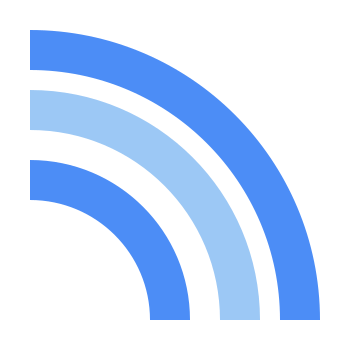

-
Aktive Nutzertage
Tägliche aktive Nutzer aufsummiert, nicht eindeutige Personen.

Philipp PaulikAnalytics StudioPHILIPP-PAULIK.DE / PRIVATE ANALYTICS
Ein klarer Blick auf die Menschen, die dein Portfolio entdecken.
Bitte öffne dieses Dashboard über eine sichere HTTPS-Verbindung.
Reichweite, Seiten und Herkunft an einem Ort. Ohne öffentliche Zahlen und ohne zusätzliches Tracking.
Tägliche aktive Nutzer aufsummiert, nicht eindeutige Personen.
Besuche im ausgewerteten Zeitraum.
Alle gemessenen Aufrufe deines Portfolios.
02 / ENTWICKLUNG
03 / INHALTE
Deine meistbesuchten Seiten
04 / HERKUNFT
Die wichtigsten Besuchsquellen
Gemessen wird auf dem Portfolio nur nach Einwilligung. Ablehnende Besucher und blockierte Messungen sind hier nicht enthalten. Kleine Zahlen sind keine vollständige Abbildung deiner Reichweite.